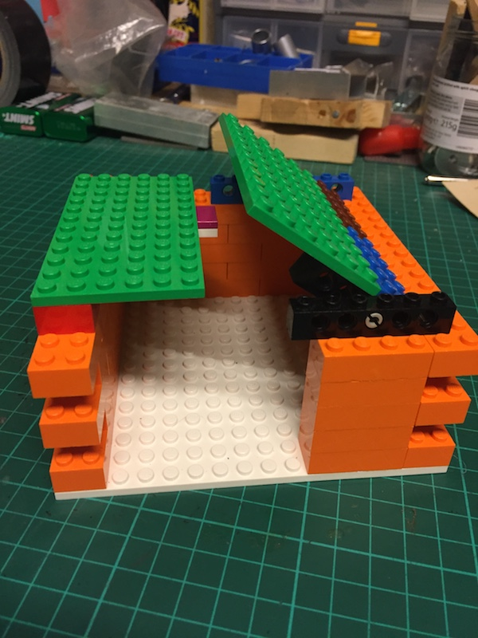

Designing The Box
When it came to the box I was in two minds – Either I make it in wood, or Lego. (Give me a few months and ‘plastic’ would be an option – But I’m waiting until I buy a 3D printer…)
Wood has a certain charm, but Lego is much easier to work with and adds a nice ‘retro’ feel.
The design is simple, as you can see…

For now I’m leaving a hole in one side, allowing easy access without having to go through the top. I don’t know how tall the walls need to be (I’ve got to fit a couple of servos, a ‘finger’, and an Arduino in there yet!), so it’s all a bit ‘prototype’.
Good enough for now though!